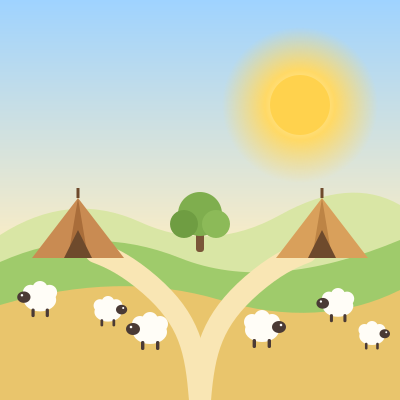
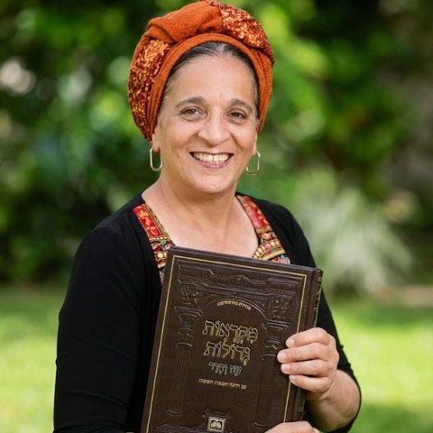

בואו נקשיב היום לסיפור ממש מיוחד, ממש מעניין…
🗺️ נופי ארץ ישראל
📖 הסיפור של השבוע
שלום ילדים חמודים. אנחנו היום ממשיכים בסיפור הבא. היום יש לנו סיפור מאוד מאוד מיוחד ומעניין, אז שבו בנוח ואנחנו מתחילים.
אתם זוכרים שסיפרנו ששרה הייתה בבית של פרעה, שאברהם אמר לה: אימרי נא אחותי את. ואחר כך הם גילו שבאמת היא אשתו של אברהם, ופרעה נתן לאברהם הרבה מאוד מתנות, ושלח אותו חזרה לארץ. ואברהם עלה ממצרים הוא ואשתו וכל אשר לו.
ואתם זוכרים מי עוד היה איתו? היה איתו גם לוט. אבא של לוט נפטר, ואברהם לקח את לוט כאילו שהוא הבן שלו, ולוט היה עם אברהם כל הזמן, ולמד ממנו וגר אצלו וחי איתו.
ואברהם היה כבד מאוד במקנה, בכסף ובזהב. אברהם היה איש מאוד מאוד עשיר. היו לו הרבה חמורים וכבשים ופרות, והיה לו גם הרבה כסף, והיו לו גם הרבה תכשיטי זהב. והנה הוא הולך, מטייל בארץ, מחפש איפה לגור, והוא מגיע חזרה לביתו בבית אל, איפה שהוא כבר היה פעם אחת.
אבל גם ללוט, שהולך עם אברהם, היה צאן ובקר ואוהלים — גם לוט עשיר. גם ללוט היה הרבה כסף, והיו לו גם הרבה כבשים ובקר וחמורים.
שתראו מה כתוב בתורה: "ולא נשא אותם הארץ לשבת יחדיו, כי היה רכושם רב, ולא יכלו לשבת יחדיו". כל אחד שיש לו כבשים צריך הרבה מקום, צריך הרבה דשא והרבה עשב להאכיל את הכבשים שלו.
ואתם יודעים מה קרה? "ויהי ריב בין רועי מקנה אברם ובין רועי מקנה לוט". הרועים, אלה שאחראים ושומרים על הכבשים, מתחילים לריב ביניהם: זוז מפה! זה השטח בשביל הכבשים שלי! לא נכון, זה השטח של הכבשים שלי! תסתלקו מפה! ואלה צועקים על אלה, ואלה צועקים על אלה.
ובסוף הם מגיעים לאברהם, הרועים האלה, ואומרים לאברהם: אברהם, אברהם, יש פה בעיה גדולה! כל הזמן הרועים של לוט באים לקחת לנו את השטחים של המרעה שלנו! וגם הרועים של לוט הולכים ללוט ואומרים לו: לוט, יש פה בעיה, אין לנו מקום! כל הזמן הרועים של אברהם לוקחים לנו את השטח, ואין לנו עשבים, אין לנו מקום עם עשב ירוק לתת לכבשים, ואין לכבשים שלנו מה לאכול.
ואתם יודעים מה קורה? אברהם קורא אליו את לוט. "ויאמר אברם אל לוט" — תקשיבו טוב טוב מה אומר אברהם ללוט:
"אל נא תהי מריבה ביני ובינך, ובין רועי ובין רועיך, כי אנשים אחים אנחנו".
אברהם אומר ללוט: לוט, אני לא רוצה שתהיה בינינו מריבה, אני לא רוצה שתהיה בינינו קטטה — אנחנו אחים! וממשיך אברהם ואומר: "הלוא כל הארץ לפניך, היפרד נא מעלי. אם השמאל ואימינה, ואם הימין ואשמאילה". אומר אברהם ללוט: לוט, אני לא רוצה שתהיה בינינו מריבה, אנחנו אנשים אחים. אני נותן לך את ההזדמנות לבחור ראשון! אם אתה תבחר ללכת לצד ימין — אני אלך לצד שמאל. אם אתה תבחר לצד שמאל — אני אלך לצד ימין. אין לי בעיה. העיקר שלא תהיה מריבה בינינו.
ולוט מסכים. הם עומדים במקום גבוה, "וישא לוט את עיניו וירא את כל ככר הירדן כי כולה משקה". לוט ככה מסתכל רחוק רחוק, ורואה שבאזור של ים המלח, באזור של סדום, יש הרבה שטחים ירוקים. או, איזה יופי! שם יש הרבה צמחייה, שם יהיה הרבה אוכל לכבשים שלי, והכבשים שלי יאכלו טוב, ויהיה להם הרבה בשר, ויהיה לי הרבה חלב, ויהיה לי הרבה צמר, ואני אעשיר, והם ימליטו עוד ועוד ועוד כבשים! נהדר, נהדר!
אברהם, אני החלטתי, אומר לוט. זה כתוב בתורה: "ויבחר לו לוט את כל ככר הירדן, ויסע לוט מקדם, וייפרדו איש מעל אחיו". הנה הם נפרדים. אברהם אמר ללוט "היפרד נא מעלי" — והם באמת נפרדים. אברהם ישב בארץ כנען, ולוט ישב בערי הכיכר.
אבל יש פה עוד משהו שאומרת לנו התורה: "ויאהל עד סדום". האוהלים של לוט מגיעים עד סדום. ומיד כתוב לנו בפסוק הבא: "ואנשי סדום רעים וחטאים לה' מאוד".
לוט בוחר לגור ליד אנשים רעים וחטאים בעיר סדום. לוט בחר את האזור שיש בו הרבה הרבה צמחייה ודשא ומים, ושם הוא יוכל לגדל את הכבשים שלו בטוב, והכבשים שלו ישמינו ויתנו הרבה חלב והרבה צמר. אבל השכנים שם — רעים מאוד. כתוב בתורה: "ואנשי סדום רעים וחטאים לה' מאוד".
אנחנו עכשיו נעצור את הסיפור הזה, ורק אני רוצה שתשימו לב לכמה דברים. שימו לב איך אברהם לא רוצה שתהיה מריבה. הוא קורא ללוט בעצמו, והוא אומר לו: "אל נא תהי מריבה ביני ובינך ובין רועי ובין רועיך, כי אנשים אחים אנחנו". אברהם לא רוצה שתהיה מריבה, והוא מוותר, ואומר: כל הארץ לפניך, היפרד נא מעלי — אני נותן לך לבחור ראשון. אני מוותר. העיקר שיהיה שלום.
אבל לוט לוקח את ההזדמנות שאברהם נותן לו — אבל הוא עושה טעות גדולה גדולה, מפני שלוט הולך לגור ליד אנשים רעים וחטאים לה' מאוד — אנשי סדום.
ובפעם הבאה אנחנו נראה מה קרה לאנשי סדום.
להתראות, ילדים חמודים, ולילה טוב.
🎁 מה מקבלים כל שבוע?
"הילדים מחכים לסיפור כל שבוע. הליכה לישון הפכה לזמן שהם הכי אוהבים."
🎁 בוחרים תוכנית
כל התוכניות כוללות: סיפור לכל פרשה + קבוצת הוואטסאפ
💫 נעים להכיר

אמא, סבתא ואשת חינוך לגיל הרך, עם למעלה מ־33 שנות ניסיון ואהבה גדולה לילדים ולסיפורי התורה.
מתוך שתי האהבות שלי יצרתי את האפליקציה הזו, כדי להעניק לילדים מתנה יקרה: חיבור לשורשים, לזהות היהודית ולמורשת של עם ישראל.
דרך סיפורי התורה והנ״ך, המסופרים בקולי בחום ובהתלהבות, יכירו הילדים את הסיפור של עמנו, יתחברו לארץ ישראל, לערכים ולאהבת האדם, ויצמיחו שורשים שילוו אותם לאורך חייהם.
בלי מסכים, בלי גירויים חזותיים – רק הקשבה, דמיון וחוויה.
הסיפורים שילוו את ילדינו היום, יהיו השורשים שעליהם יצמחו מחר. 🌱

Dream it. Plan it. Achieve it.